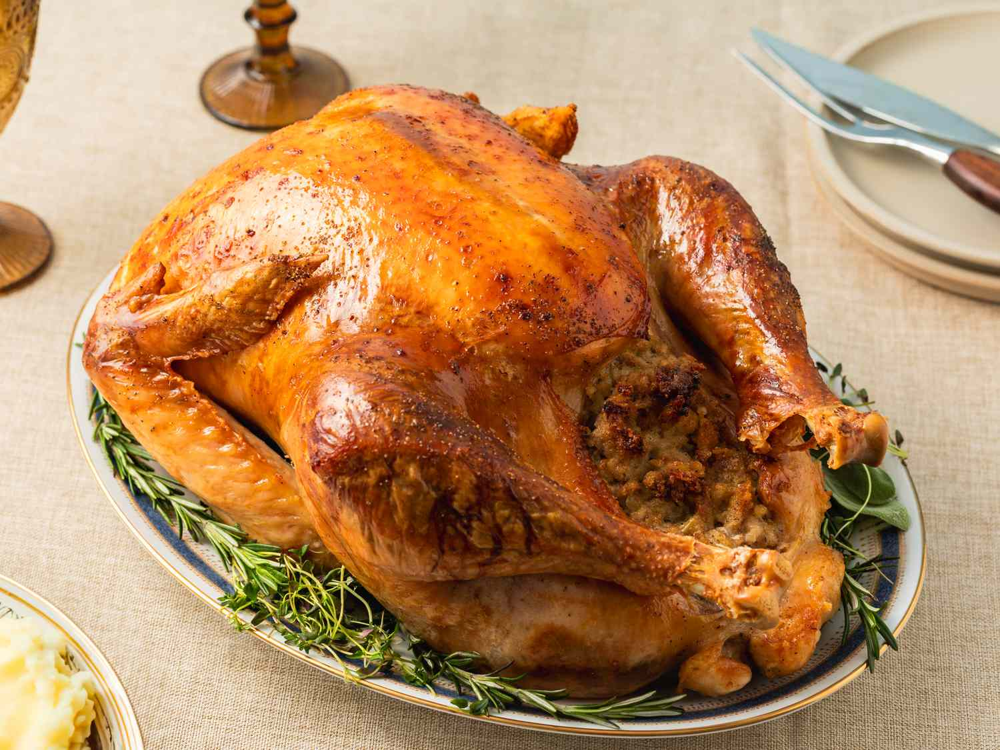

Roast Turkey
Ingredients
- 1 whole turkey (10–12 lbs)
- 1/2 cup olive oil
- 1 tablespoon salt
- 1 tablespoon black pepper
- 2 teaspoons garlic powder
- 2 teaspoons onion powder
- 2 tablespoons fresh rosemary (chopped)
- 2 tablespoons fresh thyme (chopped)
- 1 lemon (quartered)
- 1 onion (quartered)
- 1 head of garlic (halved)
- 2 cups chicken broth (for basting)
0:00
0:00
Preheat the oven to 325°F (163°C).
Pat the turkey dry with paper towels.
Rub the turkey all over with olive oil, salt, pepper, garlic powder, onion powder, rosemary, and thyme.
Stuff the turkey with the lemon, onion, and garlic.
Place the turkey on a roasting rack in a large roasting pan.
Roast the turkey for about 3 hours, basting with chicken broth every 45 minutes.
Once the internal temperature reaches 165°F (74°C) in the thickest part of the thigh, remove from the oven.
Let the turkey rest for 15 minutes before carving.
Enjoy your succulent roast turkey!